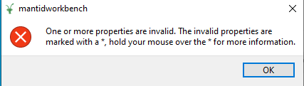

If an algorithm run from its dialog fails, perhaps because the inputs contained the wrong data that wasn’t immediately rejected by a Validator, it would be good to bring this to the user’s attention. At present there will just be one or more orange warnings or a red error (with traceback) in the Messages window, which might be hidden behind other workspace windows or graphs.
Should we have such errors pop up a standard error box as the host OS would use, containing a red “X” or similar, the text of any exception raised, and an “OK” button?
With algorithms run from a script, the user would be expecting to see the errors among the script output and either a red arrow in the margin where it stopped or a green one at the end, so I think no change is needed here.
Workflow algorithms might want to catch and re-raise errors in their child algorithms, giving a more informative message which might then pop up if the workflow was run from a dialog.
Don’t use the “Mantid has encountered an internal error, please report it” for this!
I would be interested in a specific example you might have. There currently seems to be this:

which at least points out which number is invalid. Do you mean a pop-up explaining specifically why the value failed the validator?
That’s the one you get where one input fails its validator. I’d like to expand that (for example) to the case where two inputs, valid in isolation, aren’t compatible. For example “Plus” where the two workspaces have different numbers of bins.
If it’s possible to write arbitrary validators which can look at values being entered for other properties as well as itself, that might be one solution. You might however get into the messy case of the validator doing most of the work, loading files, etc.
Or should the “dialog” top level code wrap the underlying Algorithm call in a try…except clause and use the error message (if any) to generate a dialog box rather than just letting the traceback go to the Messages window?
Just been discussing this with Nick and Martyn. This is something we are certainly keen to improve on and we’d like make useful error messages less ignorable, in a clear and obvious way.
We aren’t sure that a pop-up window specifically is the best way as this could become annoying quickly. Potentially a notification system or something red appearing near the “Algorithms” window. We will discuss some of the best approaches and practicalities involved after this release.
An issue has been created for this: Notifications for Algorithm Error · Issue #27305 · mantidproject/mantid · GitHub
Do you have any suggestions as to what sort of measures may work? Are users usually not covering the Algorithms window, so some sort of indication in red here may work??

I imagined that the error dialog would only appear once when the algorithm had decided to give up entirely, and raises an exception which is left to be caught by the Workbench core.
In the 500 of 1000 spectra failing example, either the workflow needs all of them to be good fits, in which case it would raise the error the first time it failed and not proceed further. CalMuonDetectorPhases is/was like this. Or it would be able to work with a certain fraction of failures, so it would trap the exceptions from Fit, print warnings or errors to the messages window (including tracebacks?) and continue. These would not produce pop up error boxes, but just scroll past. At the end it may inspect the results and re-raise an error for a dialog box if there were insufficient good spectra.
I like the idea of the progress bar turning red if an algorithm fails, or perhaps yellow if it has raised warnings. There’s currently a bug in Workbench that an algorithm that has yet to report any actual progress doesn’t get a progress bar or even an entry under the “Details” button, so a failure on the first spectrum may go un-alerted. (This also affects slow algorithms that don’t (yet) use the Progress mechanism at all)
I see this has now been implemented along with (or shortly before) the Python 3 change over. On Windows 10 it pops up a Windows notification message in the bottom right of the screen, just saying “Sorry there was an error, please look at the message display for details”. But if I’ve got the messages window down the right side of the screen this box covers up the very message it’s telling me about. But at least it does alert me…